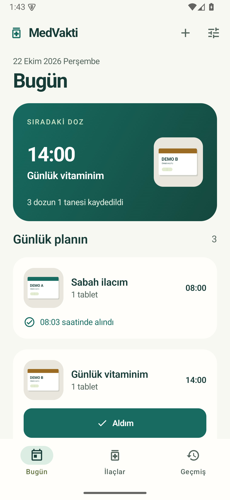

Android · Türkçe / English / Deutsch / 日本語İlaçlarını unutma.
Aldığını bil.
Kutu fotoğrafını ekle veya adını yaz. Saatini seç; aldığını fotoğrafından tanıyarak kaydet. Ayrıntıları istediğinde aç, günlük akışını sade tut.
- Fotoğraf, otomatik kare küçük görsel ve cihazda ad okuma
- Hesap gerektirmeyen çevrimdışı ilaç takibi
- Günlük, belirli günlerde veya aralıklı hatırlatmalar
- Aldım, atladım, ertele ve geri al işlemleri
- İsteğe bağlı parola ile şifrelenmiş dosya yedeği
Google Play yayın hazırlığı sürüyor.
MedVakti kullanıcının girdiği planı hatırlatır. Doz hesaplamaz; teşhis, tedavi veya tıbbi tavsiye sunmaz.